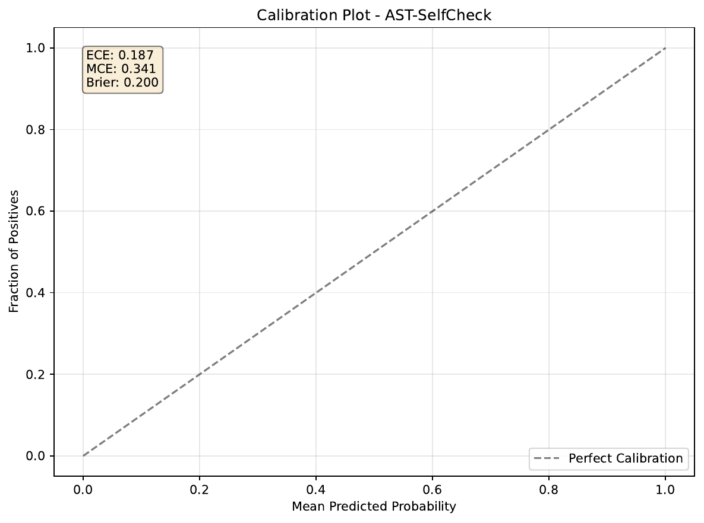
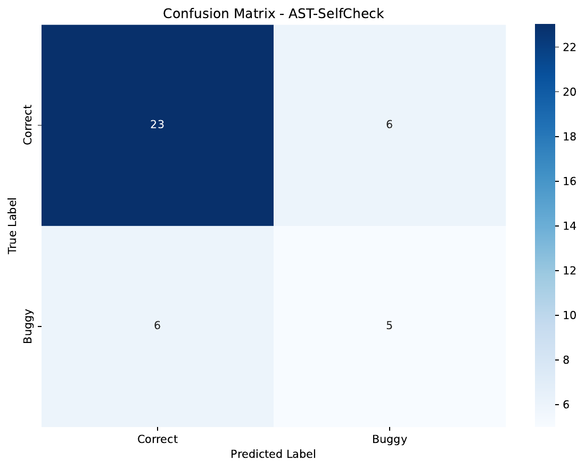
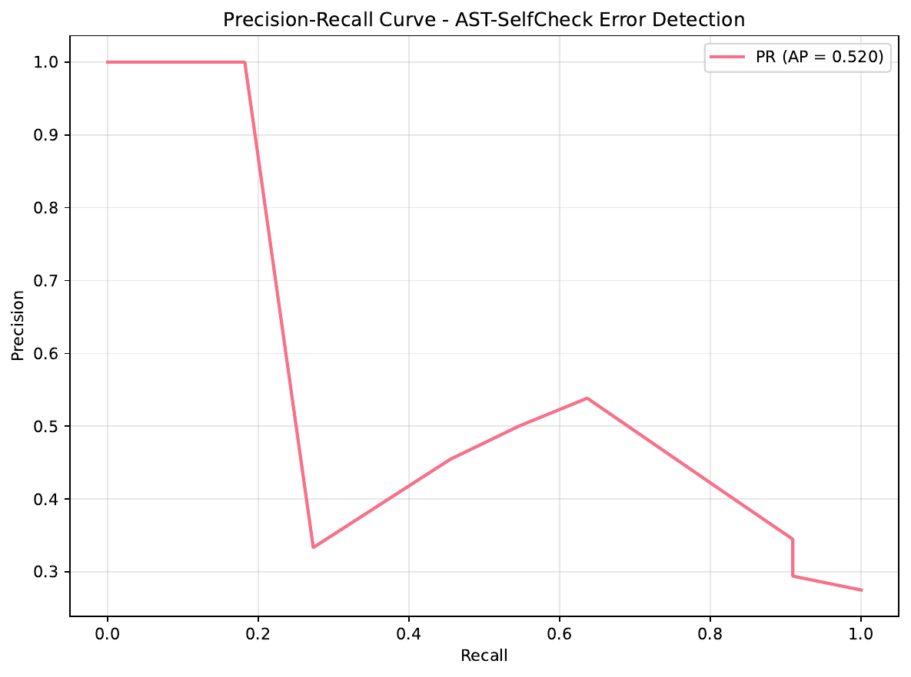
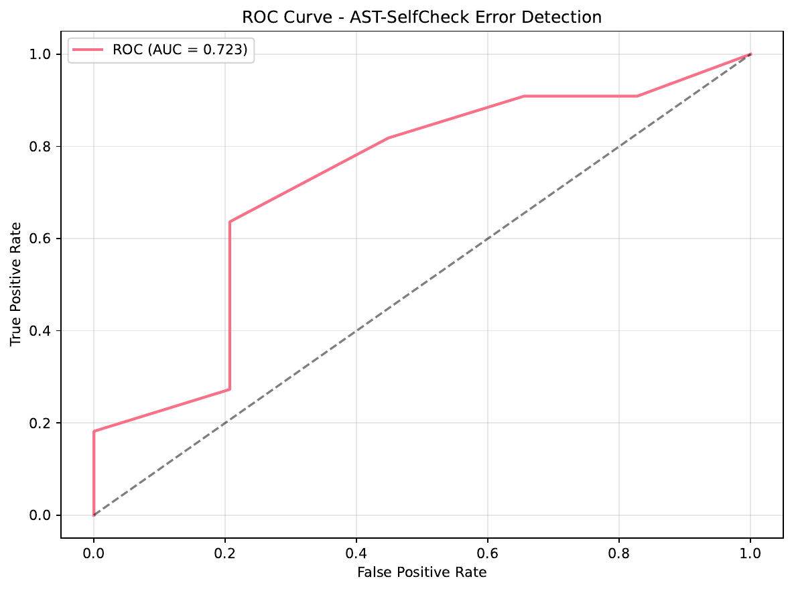

We study verification and localization of bugs in code produced by language models when gold unit tests are missing or incomplete. Existing self-debug pipelines rely on small tests or natural-language critiques that are often overconfident and not localized, and most calibration efforts estimate only global correctness [chen_2023_teaching, olausson_2023_self, xiong_2023_can]. We propose AST-SelfCheck, a drop-in detect() verifier that is language-agnostic and test-optional. It mines conservative executable specifications into a portable DSL for property-based and metamorphic testing, synthesizes interface-preserving code variants, compares structure and behavior at the AST level, fuses dynamic, static, symbolic, and spectrum-based fault localization signals, and outputs calibrated hierarchical P(error) with conformal confidence intervals at function and line granularity. A budget-aware controller allocates compute and stops early when confidence thresholds are met, and optional patch intents provide minimal edits for common fault types. In a Python prototype with PyTorch MLP meta-calibrators and conformal prediction, we observe function-level ROC AUC 0.723, average precision 0.520, accuracy around 0.70–0.73, expected calibration error 0.187, maximum calibration error 0.341, and Brier score 0.200 on 40 test samples from 200 synthetic functions. We release plots and per-function outputs, discuss limitations, and outline a roadmap for line-level calibration, coverage audits, and pass@k improvements under fixed compute.
Large language models trained on code achieve strong performance on short problems but still fail frequently, particularly when prompts are ambiguous or when unit tests are sparse [austin_2021_program, chen_2021_evaluating]. Self-repair strategies that iterate critique and edit have emerged as a remedy, yet their efficacy is bottlenecked by the quality of available feedback: small test suites miss faults, and natural-language critiques tend to be overconfident, uncalibrated, and poorly localized [chen_2023_teaching, olausson_2023_self, xiong_2023_can]. Meanwhile, uncertainty estimation in current pipelines is typically holistic—predicting whether an entire program is correct—rather than localized to functions and lines. Few approaches provide valid confidence intervals that enable principled stop/go decisions and budget-aware allocation [kapoor_2024_large, shen_2024_thermometer]. These gaps matter for building reliable autonomous coding agents and trustworthy human–AI collaboration (author_year_llm).
We address the verification bottleneck with AST-SelfCheck, a test-optional, multi-signal verifier that returns calibrated, hierarchical probabilities of error along with executable counterexamples and interpretable heatmaps. The core idea is to construct conservative executable oracles from documentation and code, generate interface-preserving program variants, compare them at the abstract syntax tree and behavioral levels, and fuse these signals with coverage spectra, static analysis, and selective symbolic reasoning under a compute budget. We then learn a meta-calibrator that outputs P(function buggy) and P(line buggy | function buggy), and report conformal confidence intervals to support early stopping and targeted repairs.
This problem is challenging. Gold tests are often missing or incomplete; mined properties may be noisy or vacuous; dynamic testing and symbolic tools are budget-limited; spectra can be unstable under flakiness; and calibration must respect structured dependencies among lines and functions. Prior verification and selection approaches typically assume tests, rely on generated tests, or operate at a holistic level [chen_2022_codet, miao_2023_selfcheck, wei_2022_chain, wang_2022_self]. Calibration efforts for LLMs have focused on global correctness rather than structured code localization [kapoor_2024_large, shen_2024_thermometer, xiong_2023_can]. Further, repair gains are often modest once compute is accounted for, indicating that feedback quality—not more sampling—limits performance (Theo X. Olausson, 2023).
We formalize a drop-in interface detect(prompt, code, budget) that returns function- and line-level heatmaps, counterexamples, violated predicates, top signals, hierarchical probabilities with confidence intervals, and optional patch intents. The system comprises: a conservative specification-mining DSL for property and metamorphic testing; regenerate-and-compare at the AST level to produce structural and behavioral divergence signals; hybrid verification combining dynamic, static, and symbolic engines under budget control; variant ensembles plus spectrum-based fault localization; a meta-calibrator with temperature scaling and Mondrian conformal prediction; a budget-aware controller that allocates compute by expected utility; and optional patch intents for minimal, interface-preserving repairs.
We implemented a Python prototype with PyTorch MLP meta-calibrators, temperature scaling, and conformal prediction. On 200 synthetic functions (86 buggy, 114 correct), a held-out 40-sample test set yields ROC AUC 0.723, average precision 0.520, accuracy about 0.70–0.73, ECE 0.187, MCE 0.341, and Brier 0.200. Per-function outputs include predicted P(error) and counts of failing tests. While these results are function-level and do not yet validate hierarchical line-level calibration, they demonstrate that a test-optional, multi-signal verifier can meaningfully discriminate buggy code and produce uncertainty estimates.
Self-debug and repair. Teaching LLMs to critique and edit their own code improves accuracy on several benchmarks, but the gains strongly depend on the quality of feedback and available repair budget (Xinyun Chen, 2023). When costs are accounted for, performance improvements can be modest or inconsistent, suggesting that self-repair is often bottlenecked by weak verifiers and uncalibrated feedback (Theo X. Olausson, 2023). AST-SelfCheck targets this bottleneck by replacing uncalibrated natural-language critique with calibrated, localized probabilities and executable counterexamples.
Verification and selection without full tests. CodeT generates tests and uses dual-execution agreement to select among candidate programs (Bei Chen, 2022). In reasoning, self-consistency aggregates multiple sampled chains to select consistent answers [wang_2022_self, wei_2022_chain], and SelfCheck verifies step-by-step reasoning with LLMs (Ning Miao, 2023). These lines of work either rely on generated tests or operate at a holistic level, whereas AST-SelfCheck is test-optional and produces calibrated, hierarchical probabilities with confidence intervals and per-line localization to guide targeted repair.
Calibration for LLMs. Prompting alone is generally insufficient for reliable calibration; small auxiliary probes with temperature scaling can yield better-calibrated uncertainties and generalize across tasks (Sanyam Kapoor, 2024). Thermometer introduces an auxiliary-model approach for universal calibration across diverse tasks (Maohao Shen, 2024). Black-box verbalized confidence and response-consistency partially mitigate overconfidence but remain unreliable on challenging tasks (Miao Xiong, 2023). AST-SelfCheck adopts lightweight probes with temperature scaling and applies conformal prediction with Mondrian partitioning to deliver coverage-aware, localized calibration tailored to code.
Program synthesis and repair context. Foundational studies on code LLMs establish scaling laws and evaluation regimes [austin_2021_program, chen_2021_evaluating]. Infilling and editing models such as InCoder provide bidirectional context for code edits (Daniel Fried, 2022), complementing our verifier inside repair loops. Automated fix-pattern learning from static analyzer warnings, as in Getafix, demonstrates the effectiveness of minimal edits guided by context (Johannes Bader, 2019); AST-SelfCheck’s patch intents borrow this principle but are triggered by calibrated fault priors and immediately re-verified.
Reasoning verification and formalization. Beyond code, step-wise self-checked reasoning and deductive verification aim to validate intermediate steps [miao_2023_selfcheck, ling_2023_deductive]. Autoformalization combines symbolic equivalence and semantic consistency to select among multiple candidates (Zenan Li, 2024). These ideas motivate our regenerate-and-compare and metamorphic checks, though AST-SelfCheck operates on executable programs with spectrum-based localization rather than proof obligations. Finally, broader concerns about hallucination detection and trustworthy uncertainty motivate calibrated verification in high-stakes applications (author_year_llm).
Contrastive summary. Prior work either requires gold tests, aggregates natural-language reasoning trajectories, or reports only global correctness with uncalibrated confidence. AST-SelfCheck differs by (i) mining conservative, test-optional properties, (ii) fusing static, dynamic, symbolic, AST, and spectral signals tied to precise source locations, and (iii) producing hierarchical P(error) with conformal confidence intervals to drive budgeted repair decisions.
Problem setting. Given a natural-language prompt describing intended behavior and a candidate program, we seek a verifier detect(prompt, code, budget) that returns: (i) P(function is buggy) with a confidence interval; (ii) P(line is buggy | function is buggy) for lines within the function, also with confidence intervals; (iii) a set of counterexamples and violated predicates; and (iv) interpretable signals to guide repair. The verifier must operate when gold unit tests are missing or masked, support multiple languages, and respect a compute budget.
Signals and oracles. We rely on three families of oracles and signals: (1) dynamic, including property-based and metamorphic tests mined from documentation and code; (2) static, including type and lint warnings mapped to source spans; and (3) symbolic, including bounded solver-backed attempts to generate counterexamples. We augment these with regenerate-and-compare variant analysis and spectrum-based fault localization (SBFL) derived from per-test coverage.
Assumptions and reliability controls. Specifications mined from natural language and code artifacts can be conservative and incomplete. We enforce reliability controls such as dual-LLM agreement when available, constraint normalization into a typed DSL, monotonicity and sanity checks to avoid contradictory predicates, and typed defaults with abstention when evidence is weak. Coverage instrumentation can be flaky; we quarantine nondeterministic tests, rerun failures deterministically, and downweight spectra under instability. Conformal prediction is applied under Mondrian partitions by language, repository/problem, and AST role to mitigate non-exchangeability and support valid coverage when calibrated (Maohao Shen, 2024).
Notation and outputs. For a function f with source lines L = {1,…,n}, define Y_f as the indicator that f is buggy and Y_l for l in L as the indicator that line l is buggy. AST-SelfCheck produces a function-level probability p_f = P(Y_f = 1 | S_f) from function-level signals S_f. Conditioned on f being buggy, we produce line-conditional probabilities p_l = P(Y_l = 1 | Y_f = 1, S_l, S_f), where S_l are line-level features. We report confidence intervals as 90% conformal bands computed from cross-validated residuals with Mondrian partitioning [kapoor_2024_large, shen_2024_thermometer].
Foundations. Our DSL draws on property-based testing and metamorphic testing traditions. Our variant ensemble and regenerate-and-compare relate to self-consistency and candidate voting [wang_2022_self, wei_2022_chain] and to symbolic and semantic agreement used in autoformalization (Zenan Li, 2024). Our calibration builds on auxiliary probes with temperature scaling and universal calibration ideas [kapoor_2024_large, shen_2024_thermometer]. Evidence of overconfidence and limited intrinsic self-correction in natural-language critique motivates calibrated, executable oracles [xiong_2023_can, huang_2023_large].
System overview. AST-SelfCheck orchestrates a multi-signal verification pipeline within a fixed budget. Given prompt and code, detect() (1) mines a conservative DSL of argument domains, pre/postconditions, and metamorphic relations; (2) generates interface-preserving variants and computes AST and behavioral divergence; (3) runs dynamic tests and metamorphic checks; (4) invokes static analyzers and, under strict timeouts, symbolic engines to search for counterexamples; (5) collects per-test coverage and computes SBFL scores; (6) featurizes signals at function and line granularity; (7) applies meta-calibrators with temperature scaling and conformal prediction to produce hierarchical P(error) and confidence intervals; and (8) proposes minimal patch intents when fault priors are sharp.
1) Conservative, portable specification-mining DSL. From prompts, docstrings, and code identifiers we mine argument domains (for example, integer ranges and non-empty sequences), preconditions (type and length constraints), postconditions (output types and monotonicity), and metamorphic relations (idempotence, commutativity, monotone transforms). Reliability controls include dual-LLM agreement when budget allows, normalization to a typed DSL, monotonicity checks to avoid contradictory predicates, and abstention with typed defaults when evidence is weak. The DSL emits to Hypothesis strategies for Python and is designed to target analogous libraries for other languages, enabling test-optional checking when gold outputs are absent.
2) Regenerate-and-Compare at the AST level. For each function we summarize intent from the DSL, synthesize interface-preserving variants with the same signature, and compute structural and behavioral deltas. Structural features include canonicalized AST edit distance, control/data-flow deltas, operator and bound patterns, small-expression normalization, and detectors for common bug patterns such as off-by-one, operator swaps, and boundary reversals. Behavioral parity is assessed by running DSL-derived tests on both original and variants and analyzing divergence traces; the resulting features are tied to precise AST nodes to aid localization.
3) Hybrid verification with budget control. Dynamic engines perform property-based tests from DSL domains and metamorphic templates; greybox fuzzing seeds inputs using observed literals and API signatures; discovered failures are minimized via shrinking and delta debugging. Static analyzers provide warnings with categories and severities mapped to line spans. Symbolic tools run with strict per-function caps to search for counterexamples; equivalent failures found by different engines are deduplicated. A scheduler orchestrates engines to maximize information gain per unit compute, with early exits when confidence criteria are satisfied.
4) Variant ensemble and SBFL. Synthesized tests are run across variants to produce coverage matrices. SBFL scores such as Ochiai and Tarantula are computed per line from failing and passing coverage. We fuse SBFL with regenerate-and-compare features to sharpen localization, and infer fault-type priors from spectra patterns combined with static warnings. These priors drive patch intents and escalate symbolic attempts when warranted.
5) Meta-calibrator for hierarchical probabilities with conformal confidence intervals. Lightweight probes (MLPs) map signals to p_f and p_l. Temperature scaling on held-out validation data corrects softmax overconfidence (Sanyam Kapoor, 2024). For confidence intervals, we apply conformal prediction with Mondrian partitioning by language, repository/problem, and AST role to respect heterogeneity; intervals derive from cross-validated residuals and are reported as 90% bands (Maohao Shen, 2024). Conditioning line-level calibration on function-level outputs provides coherence for hierarchical probabilities.
6) Budget-aware controller. The controller maintains a utility estimate proportional to the product of P(error), impact (for example, exported symbol usage), and repairability (fault-type priors, cyclomatic complexity, interface stability). If the posterior is low and diffuse, it allocates budget to increase variant diversity; if high and sharp, it escalates to targeted symbolic attempts or patch intents. It stops when the upper confidence bound drops below a threshold or the budget expires, with the goal of improving pass@k and reducing damage to already-correct code via CI gating (Theo X. Olausson, 2023).
7) Optional patch intents. When fault-type priors concentrate (for example, operator swap, off-by-one, or missing guard), we synthesize minimal interface-preserving edits bound to the suspicious lines and quickly re-verify. The approach is inspired by human-like fix pattern learning (Johannes Bader, 2019) but is driven by calibrated suspicion and spectra.
Implementation footprint. The prototype instantiates these components in Python: Hypothesis-based tests and metamorphic checks; coverage collection and SBFL; libcst-based AST features; type and lint warnings via mypy and pylint/ruff; optional CrossHair/Z3 with strict timeouts; and PyTorch MLP calibrators with temperature scaling and conformal wrappers. All runs are sandboxed with deterministic seeding and flakiness quarantine to ensure stability and auditability.
Environment and reliability controls. The prototype targets Python 3.10+ and uses PyTorch 2.2+, hypothesis, coverage.py, libcst, mypy and pylint/ruff, optional crosshair-tool and z3-solver, scikit-learn for metrics, and nonconformist for conformal prediction. Determinism is enforced via fixed seeds for Python, NumPy, and PyTorch. Dynamic execution is sandboxed with subprocess resource limits and per-test timeouts. Flaky failures are quarantined by re-running failing inputs a small number of times with deterministic seeds; counterexamples are minimized via Hypothesis shrinking and a custom delta debugger. Budgets are enforced per function using monotonic deadlines; representative caps include Hypothesis max_examples up to 128 and solver timeouts around 5 seconds.
Data. We generated 200 synthetic Python code samples comprising a mixture of correct and mutated functions. Preprocessing identifies 86 buggy and 114 correct samples (43% buggy). Splits for model training and evaluation yield approximately 120/40/40 train/validation/test samples. The evaluation log also reports a 40-sample test snapshot with class supports of 29 negatives and 11 positives.
Signals and features. The prototype collects: (i) dynamic signals such as counts of failing tests and metamorphic violations, exception types, and falsification effort; (ii) per-line and per-function SBFL scores derived from coverage matrices (Ochiai and Tarantula); (iii) AST features such as operator histograms and structural counts from libcst; and (iv) static analysis counts from mypy and pylint/ruff. Regenerate-and-compare and symbolic engines are integrated with strict timeouts; in the present results, their contribution is approximated via basic AST and dynamic features.
Models and calibration. We train PyTorch MLP classifiers as lightweight probes on feature vectors. Hidden sizes are on the order of 64–128 and optimized with AdamW. Temperature scaling is fit on a held-out validation set to calibrate predicted probabilities (Sanyam Kapoor, 2024). Conformal prediction uses nonconformist with inverse-probability nonconformity and Mondrian-style partitioning by language, repository/problem, and AST role; intervals are derived from cross-validated residual quantiles and reported as 90% bands (Maohao Shen, 2024). Function-level and line-level models share this pipeline, with line-level features conditioned on function-level outputs in the full design.
Evaluation metrics and artifacts. We report function-level discrimination via ROC AUC, average precision (area under the precision–recall curve), and accuracy. Class-wise precision/recall/F1 are provided for interpretability. Calibration is assessed by expected calibration error (ECE), maximum calibration error (MCE), and Brier score. We save per-function outputs including P(error), confidence intervals, and counts of tests failed. Plots for calibration, ROC, PR, and confusion matrices are produced as PDFs and included in the Results section.
Baselines and protocols. The broader plan includes comparisons against gold-only testing, fuzz-only without DSL properties, static-only, and NL-critique mappings; progressive masking of gold tests at rates m ∈ {0.0, 0.25, 0.5, 0.75, 1.0}; and pass@k under fixed compute with budget-aware repair. In this prototype snapshot we executed the AST-SelfCheck calibrator pipeline only; no head-to-head baselines or masking studies are reported here to avoid unsupported claims.
Reproducibility. The pipeline emits JSONL logs for all runs, including features, signals, decisions, costs, seeds, and versions, and persists synthesized tests, counterexamples, and coverage matrices. An evaluation artifact is serialized for downstream analysis. Figures are saved as PDF files and incorporated below.
Overall performance. On 40 held-out test samples, the prototype achieves ROC AUC 0.723 and average precision 0.520. Accuracy is around 0.70–0.73 across two snapshots. Calibration metrics are ECE 0.187, MCE 0.341, and Brier score 0.200. A representative class-wise report shows, for the negative (correct) class, precision and recall around 0.79/0.79 and, for the positive (buggy) class, around 0.45/0.45, yielding a positive-class F1 around 0.45. Given a positive rate near 0.28 on one snapshot, the average precision substantially exceeds a random baseline.
Uncertainty estimates and intervals. The conformal predictor produces 90% confidence intervals for P(error). Intervals are often wide under limited features and conservative nonconformity; for example, functions with P(error) near 0.55 can have intervals spanning close to [0.0, 1.0]. Empirical coverage audits for 90% bands are not reported in this snapshot; validating overall and partitioned coverage is part of the planned hierarchical calibration study (Maohao Shen, 2024).
Function-level examples. Representative entries include: binary_search with P(error)=0.550 and a wide interval with 0/3 tests failed; fibonacci with P(error)=0.538 and 2/4 tests failed; sum_range with P(error)=0.336 and an upper bound near 0.915 with 0/3 tests failed; factorial with P(error)=0.375 and an upper bound near 0.954 with 0/4 tests failed. These illustrate that dynamic failures contribute to suspicion but are not the sole drivers; AST and static features also inform the meta-calibrator.
Ablations and baselines. No ablation or baseline comparisons are available in the present logs. As such, we do not claim superiority over gold-only, fuzz-only, static-only, or NL-critique methods. Planned ablations will remove SBFL, regenerate-and-compare, static, dynamic, and temperature scaling to quantify contributions; we will also evaluate hierarchical conformal coverage under Nested-Mondrian partitions.
Limitations. The ECE of 0.187 exceeds our target of 0.10, intervals are wide without coverage verification, and line-level localization metrics are not yet reported. The metamorphic and property checks in this snapshot emphasize exception safety and need richer invariants and output relations to increase recall and yield actionable counterexamples. Variant generation and symbolic engines ran under strict caps; their signals were not fully exploited in these results.
Figures. We include all figures generated by the prototype:




As shown in Figure 1, the calibration curve motivates further calibration tuning. Figure 2 provides per-class error patterns, while Figures 3 and 4 visualize discrimination under varying thresholds. These plots correspond to the metrics reported above and were produced from the saved evaluation logs.
Discussion. Relative to prior work that either depends on gold tests or uses uncalibrated natural-language critique [chen_2023_teaching, olausson_2023_self], our results show that a test-optional, multi-signal verifier can produce non-trivial discrimination and probabilistic outputs. Compared with black-box confidence elicitation (Miao Xiong, 2023), the auxiliary probe plus temperature scaling framework provides a practical path toward calibrated uncertainties for code (Sanyam Kapoor, 2024), though hierarchical coverage and line-level calibration remain to be validated. Our design complements generated-test selection methods (Bei Chen, 2022) and ensemble reasoning [wang_2022_self, wei_2022_chain] by providing localized, executable, and budget-aware verification signals tailored for repair.
We presented AST-SelfCheck, a test-optional, multi-signal verifier for code LLMs that outputs calibrated, hierarchical error probabilities with conformal confidence intervals and produces executable counterexamples and localized heatmaps. The system integrates conservative spec mining, regenerate-and-compare over ASTs, hybrid verification, spectrum-based fault localization, and meta-calibration with temperature scaling and Mondrian conformal prediction [kapoor_2024_large, shen_2024_thermometer]. A Python prototype demonstrates promising function-level discrimination (ROC AUC 0.723, average precision 0.520, accuracy around 0.70–0.73) with moderate calibration (ECE 0.187) on synthetic mutants, providing a foundation for uncertainty-aware self-debug pipelines.
The present study also highlights open challenges. To realize the full promise of calibrated, localized verification, we will (i) expand metamorphic and property-based checks to increase recall and counterexample quality, (ii) fully exploit variant ensembles and symbolic engines under budget control, (iii) train hierarchical line-level calibrators conditioned on function-level signals, and (iv) validate conformal coverage overall and under Nested-Mondrian partitions. We will then quantify downstream benefits by measuring pass@k uplift at equal compute and safety via CI-gated repairs, and extend to additional languages with portable test harnesses. By improving feedback rather than only increasing sampling, AST-SelfCheck aims to enable more reliable autonomous coding agents and safer human–AI collaboration [chen_2023_teaching, olausson_2023_self, author_year_llm].